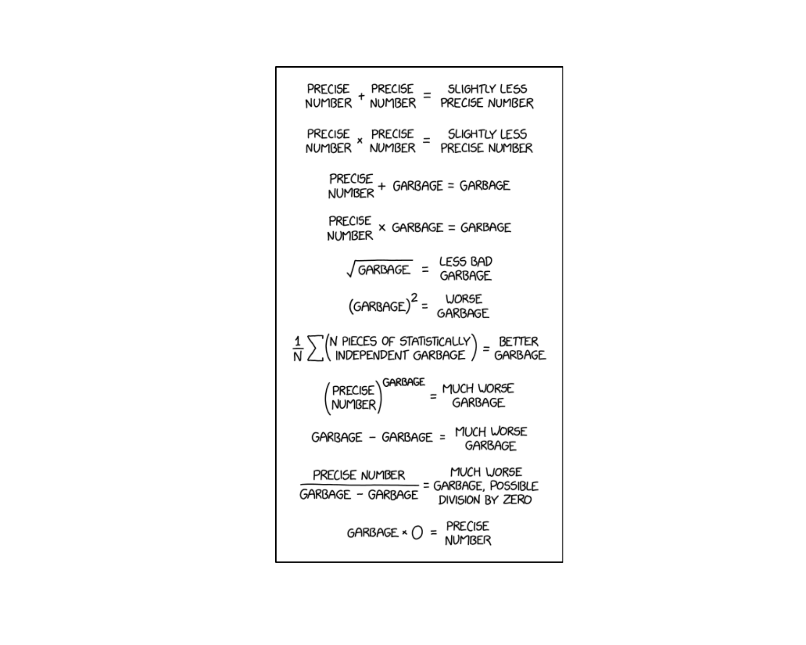
Lesson 17: Central Limit Theorem
Welcome to Block II: Inference — where we stop describing data and start making conclusions about populations from samples.

What We’re Doing: Lesson 17
Objectives
- State CLT conditions for \(\bar{X}\)
- Use normal approximations to sampling distributions
- Relate accuracy to \(n\) and population shape
Required Reading
Devore, Sections 5.3, 5.4
Break!
Cal — Basketball
Reese — Basketball
Snow Day
Reese’s Birthday!
DMath Basketball!!
Math vs AWPAD
NotePreviously 10-5
11-5

Welcome to Block II: Inference
ImportantThe Big Picture
Block I was about Data and Randomness — we learned to describe data, compute probabilities, and work with named distributions (Binomial, Poisson, Normal, Exponential).
Block II is about Inference — using sample data to draw conclusions about populations. The Central Limit Theorem is the bridge that makes this possible.
What We Did: Block I Review
NoteBlock I Summary (Lessons 1–14)
Lessons 1–5: Data types, sampling, study design, measures of center and spread, EDA
Lessons 6–8: Probability fundamentals — axioms, conditional probability, Bayes’ Rule, counting, independence
Lessons 9–14: Random Variables and Named Distributions
| Distribution | Type | Notation | Mean | Variance |
|---|---|---|---|---|
| Binomial | Discrete | \(X \sim \text{Bin}(n, p)\) | \(np\) | \(np(1-p)\) |
| Poisson | Discrete | \(X \sim \text{Pois}(\lambda)\) | \(\lambda\) | \(\lambda\) |
| Normal | Continuous | \(X \sim N(\mu, \sigma^2)\) | \(\mu\) | \(\sigma^2\) |
| Exponential | Continuous | \(X \sim \text{Exp}(\lambda)\) | \(1/\lambda\) | \(1/\lambda^2\) |
Quick Normal Review (from Lesson 13)
We lost class time to weather during our normal distribution lesson, so let’s make sure everyone is solid on the essentials before we build on them with the CLT.
The Normal Distribution
ImportantNormal Distribution
A continuous random variable \(X\) has a normal distribution with parameters \(\mu\) and \(\sigma\) (where \(\sigma > 0\)) if the PDF is:
\[f(x) = \frac{1}{\sigma\sqrt{2\pi}} e^{-\frac{(x-\mu)^2}{2\sigma^2}}, \quad -\infty < x < \infty\]
We write \(X \sim N(\mu, \sigma^2)\).
- Mean: \(E(X) = \mu\) (center of the bell curve)
- Variance: \(Var(X) = \sigma^2\) (controls the spread)
- Standard Deviation: \(SD(X) = \sigma\)
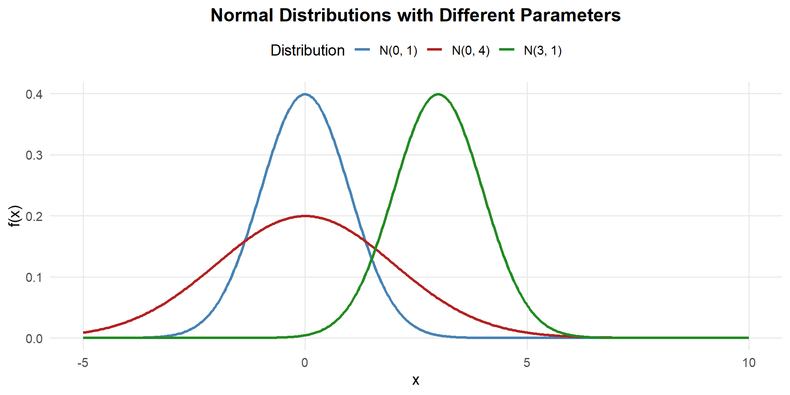
- Changing \(\mu\) shifts the curve left or right
- Changing \(\sigma\) stretches or compresses the curve
- Always symmetric about \(\mu\), total area = 1
Computing Normal Probabilities
Since the normal CDF has no closed form, we compute probabilities using pnorm() in R — just like we used ppois() for Poisson and pbinom() for Binomial.
Suppose \(X \sim N(340, 40^2)\) (cadet deadlift weights in lbs).
Recall the PDF: \(f(x) = \frac{1}{\sigma\sqrt{2\pi}} e^{-\frac{(x-\mu)^2}{2\sigma^2}}\) with \(\mu = 340, \sigma = 40\)
\(P(X < 300)\) — Less Than:
1) Probability statement: \[P(X < 300)\]
2) As an integral: \[P(X < 300) = \int_{-\infty}^{300} \frac{1}{40\sqrt{2\pi}} e^{-\frac{(x-340)^2}{2(40)^2}}\,dx\]
3) With pnorm:
pnorm(300, mean = 340, sd = 40)[1] 0.1586553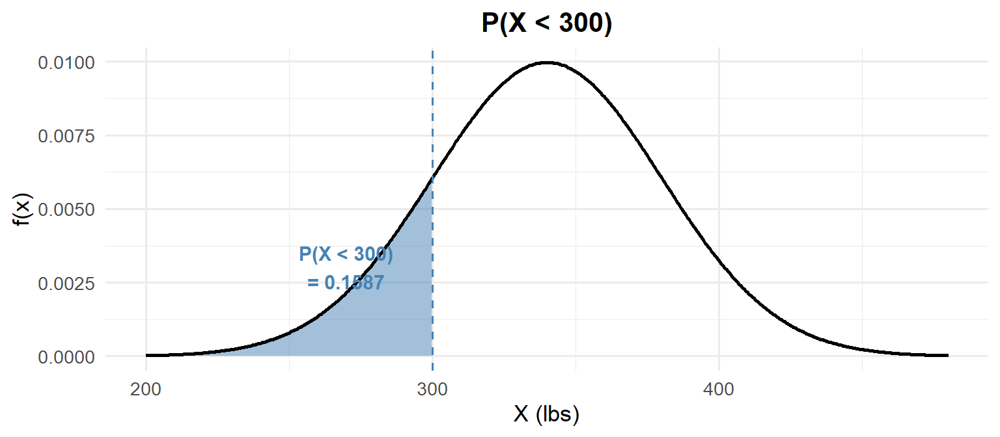
\(P(X > 400)\) — Greater Than:
1) Probability statement: \[P(X > 400)\]
2) As an integral: \[P(X > 400) = \int_{400}^{\infty} \frac{1}{40\sqrt{2\pi}} e^{-\frac{(x-340)^2}{2(40)^2}}\,dx = 1 - F(400)\]
3) With pnorm:
1 - pnorm(400, mean = 340, sd = 40)[1] 0.0668072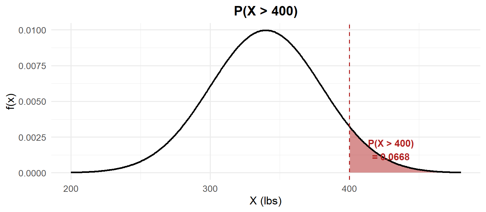
\(P(300 < X < 380)\) — Between:
1) Probability statement: \[P(300 < X < 380)\]
2) As an integral: \[P(300 < X < 380) = \int_{300}^{380} \frac{1}{40\sqrt{2\pi}} e^{-\frac{(x-340)^2}{2(40)^2}}\,dx = F(380) - F(300)\]
3) With pnorm:
pnorm(380, mean = 340, sd = 40) - pnorm(300, mean = 340, sd = 40)[1] 0.6826895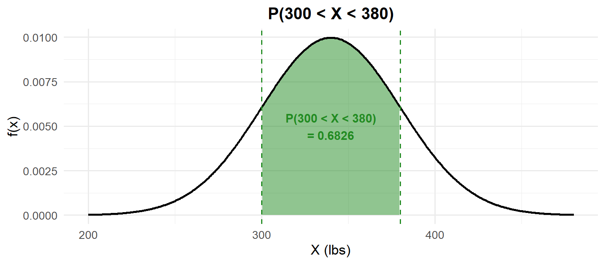
Finding quantiles — going backwards:
What is the median deadlift? The median is the 50th percentile: \(P(X \leq x) = 0.50\).
qnorm(0.50, mean = 340, sd = 40)[1] 340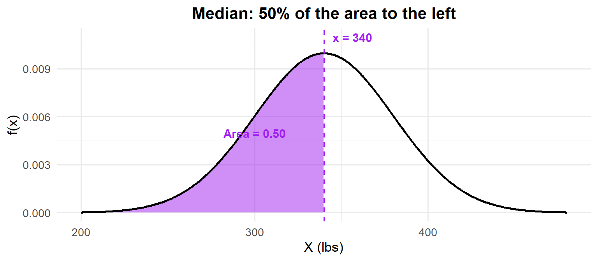
For the normal distribution, the median equals the mean — because it’s symmetric!
What deadlift separates the top 10%? We need \(P(X \leq x) = 0.90\).
qnorm(0.90, mean = 340, sd = 40)[1] 391.2621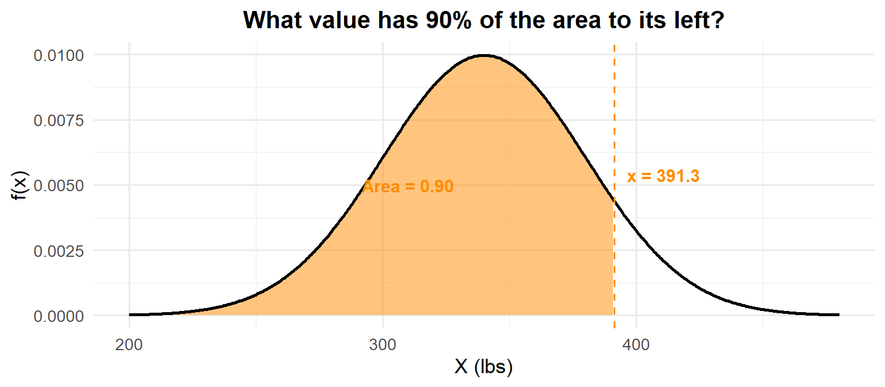
TipR Shortcut
- Left tail:
pnorm(x, mean, sd) - Right tail:
1 - pnorm(x, mean, sd) - Between:
pnorm(b, mean, sd) - pnorm(a, mean, sd) - Find the value:
qnorm(p, mean, sd)
But What About Without a Computer?
On the WPR you may not have R. You need a way to compute normal probabilities by hand. That’s where standardization comes in.
Standardization
ImportantZ-Scores and the Standard Normal
Standardization: \(Z = \frac{X - \mu}{\sigma} \sim N(0, 1)\)
Any normal random variable can be converted to the standard normal \(Z \sim N(0,1)\). This lets us use a single Z table to compute probabilities for any normal distribution.
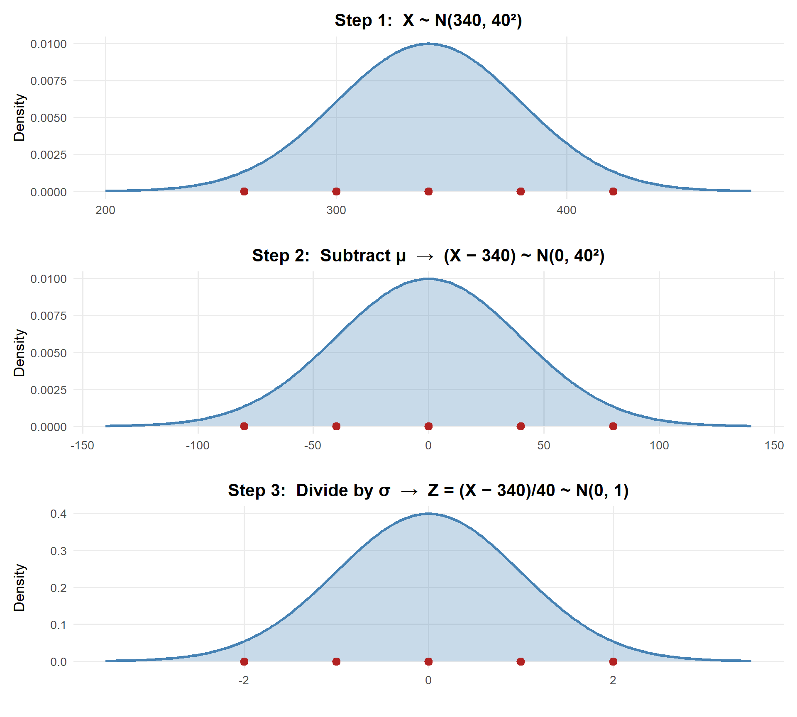
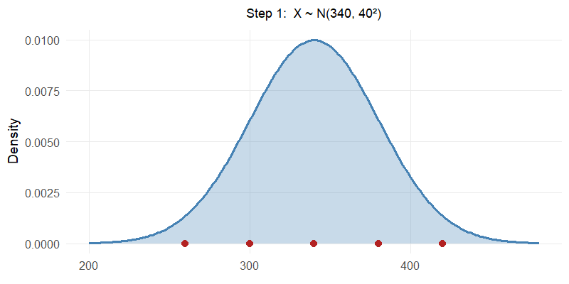
Watch the red reference points: \(340 \to 0\), \(300 \to -40 \to -1\), \(380 \to 40 \to 1\). The shape and areas never change — only the scale.
The process:
- Standardize: \(Z = \frac{X - \mu}{\sigma}\)
- Look up \(\Phi(z) = P(Z \leq z)\) in the Z table
Let’s redo the same deadlift examples (\(X \sim N(340, 40^2)\)) — this time by hand.
\(P(X < 300)\) — Less Than:
\[Z = \frac{300 - 340}{40} = -1 \qquad P(X < 300) = \Phi(-1.00)\]
Z table: Row \(-1.0\), Column \(0.00\) → \(\Phi(-1.00) =\) 0.1587
pnorm(300, mean = 340, sd = 40) # original[1] 0.1586553pnorm(-1, mean = 0, sd = 1) # standard normal[1] 0.1586553
NoteZ Table
| 0.00 | 0.01 | 0.02 | 0.03 | 0.04 | 0.05 | 0.06 | 0.07 | 0.08 | 0.09 | |
|---|---|---|---|---|---|---|---|---|---|---|
| -2.0 | 0.0228 | 0.0233 | 0.0239 | 0.0244 | 0.0250 | 0.0256 | 0.0262 | 0.0268 | 0.0274 | 0.0281 |
| -1.9 | 0.0287 | 0.0294 | 0.0301 | 0.0307 | 0.0314 | 0.0322 | 0.0329 | 0.0336 | 0.0344 | 0.0351 |
| -1.8 | 0.0359 | 0.0367 | 0.0375 | 0.0384 | 0.0392 | 0.0401 | 0.0409 | 0.0418 | 0.0427 | 0.0436 |
| -1.7 | 0.0446 | 0.0455 | 0.0465 | 0.0475 | 0.0485 | 0.0495 | 0.0505 | 0.0516 | 0.0526 | 0.0537 |
| -1.6 | 0.0548 | 0.0559 | 0.0571 | 0.0582 | 0.0594 | 0.0606 | 0.0618 | 0.0630 | 0.0643 | 0.0655 |
| -1.5 | 0.0668 | 0.0681 | 0.0694 | 0.0708 | 0.0721 | 0.0735 | 0.0749 | 0.0764 | 0.0778 | 0.0793 |
| -1.4 | 0.0808 | 0.0823 | 0.0838 | 0.0853 | 0.0869 | 0.0885 | 0.0901 | 0.0918 | 0.0934 | 0.0951 |
| -1.3 | 0.0968 | 0.0985 | 0.1003 | 0.1020 | 0.1038 | 0.1056 | 0.1075 | 0.1093 | 0.1112 | 0.1131 |
| -1.2 | 0.1151 | 0.1170 | 0.1190 | 0.1210 | 0.1230 | 0.1251 | 0.1271 | 0.1292 | 0.1314 | 0.1335 |
| -1.1 | 0.1357 | 0.1379 | 0.1401 | 0.1423 | 0.1446 | 0.1469 | 0.1492 | 0.1515 | 0.1539 | 0.1562 |
| -1.0 | 0.1587 | 0.1611 | 0.1635 | 0.1660 | 0.1685 | 0.1711 | 0.1736 | 0.1762 | 0.1788 | 0.1814 |
| -0.9 | 0.1841 | 0.1867 | 0.1894 | 0.1922 | 0.1949 | 0.1977 | 0.2005 | 0.2033 | 0.2061 | 0.2090 |
| -0.8 | 0.2119 | 0.2148 | 0.2177 | 0.2206 | 0.2236 | 0.2266 | 0.2296 | 0.2327 | 0.2358 | 0.2389 |
| -0.7 | 0.2420 | 0.2451 | 0.2483 | 0.2514 | 0.2546 | 0.2578 | 0.2611 | 0.2643 | 0.2676 | 0.2709 |
| -0.6 | 0.2743 | 0.2776 | 0.2810 | 0.2843 | 0.2877 | 0.2912 | 0.2946 | 0.2981 | 0.3015 | 0.3050 |
| -0.5 | 0.3085 | 0.3121 | 0.3156 | 0.3192 | 0.3228 | 0.3264 | 0.3300 | 0.3336 | 0.3372 | 0.3409 |
| -0.4 | 0.3446 | 0.3483 | 0.3520 | 0.3557 | 0.3594 | 0.3632 | 0.3669 | 0.3707 | 0.3745 | 0.3783 |
| -0.3 | 0.3821 | 0.3859 | 0.3897 | 0.3936 | 0.3974 | 0.4013 | 0.4052 | 0.4090 | 0.4129 | 0.4168 |
| -0.2 | 0.4207 | 0.4247 | 0.4286 | 0.4325 | 0.4364 | 0.4404 | 0.4443 | 0.4483 | 0.4522 | 0.4562 |
| -0.1 | 0.4602 | 0.4641 | 0.4681 | 0.4721 | 0.4761 | 0.4801 | 0.4840 | 0.4880 | 0.4920 | 0.4960 |
| 0.0 | 0.5000 | 0.5040 | 0.5080 | 0.5120 | 0.5160 | 0.5199 | 0.5239 | 0.5279 | 0.5319 | 0.5359 |
| 0.1 | 0.5398 | 0.5438 | 0.5478 | 0.5517 | 0.5557 | 0.5596 | 0.5636 | 0.5675 | 0.5714 | 0.5753 |
| 0.2 | 0.5793 | 0.5832 | 0.5871 | 0.5910 | 0.5948 | 0.5987 | 0.6026 | 0.6064 | 0.6103 | 0.6141 |
| 0.3 | 0.6179 | 0.6217 | 0.6255 | 0.6293 | 0.6331 | 0.6368 | 0.6406 | 0.6443 | 0.6480 | 0.6517 |
| 0.4 | 0.6554 | 0.6591 | 0.6628 | 0.6664 | 0.6700 | 0.6736 | 0.6772 | 0.6808 | 0.6844 | 0.6879 |
| 0.5 | 0.6915 | 0.6950 | 0.6985 | 0.7019 | 0.7054 | 0.7088 | 0.7123 | 0.7157 | 0.7190 | 0.7224 |
| 0.6 | 0.7257 | 0.7291 | 0.7324 | 0.7357 | 0.7389 | 0.7422 | 0.7454 | 0.7486 | 0.7517 | 0.7549 |
| 0.7 | 0.7580 | 0.7611 | 0.7642 | 0.7673 | 0.7704 | 0.7734 | 0.7764 | 0.7794 | 0.7823 | 0.7852 |
| 0.8 | 0.7881 | 0.7910 | 0.7939 | 0.7967 | 0.7995 | 0.8023 | 0.8051 | 0.8078 | 0.8106 | 0.8133 |
| 0.9 | 0.8159 | 0.8186 | 0.8212 | 0.8238 | 0.8264 | 0.8289 | 0.8315 | 0.8340 | 0.8365 | 0.8389 |
| 1.0 | 0.8413 | 0.8438 | 0.8461 | 0.8485 | 0.8508 | 0.8531 | 0.8554 | 0.8577 | 0.8599 | 0.8621 |
| 1.1 | 0.8643 | 0.8665 | 0.8686 | 0.8708 | 0.8729 | 0.8749 | 0.8770 | 0.8790 | 0.8810 | 0.8830 |
| 1.2 | 0.8849 | 0.8869 | 0.8888 | 0.8907 | 0.8925 | 0.8944 | 0.8962 | 0.8980 | 0.8997 | 0.9015 |
| 1.3 | 0.9032 | 0.9049 | 0.9066 | 0.9082 | 0.9099 | 0.9115 | 0.9131 | 0.9147 | 0.9162 | 0.9177 |
| 1.4 | 0.9192 | 0.9207 | 0.9222 | 0.9236 | 0.9251 | 0.9265 | 0.9279 | 0.9292 | 0.9306 | 0.9319 |
| 1.5 | 0.9332 | 0.9345 | 0.9357 | 0.9370 | 0.9382 | 0.9394 | 0.9406 | 0.9418 | 0.9429 | 0.9441 |
| 1.6 | 0.9452 | 0.9463 | 0.9474 | 0.9484 | 0.9495 | 0.9505 | 0.9515 | 0.9525 | 0.9535 | 0.9545 |
| 1.7 | 0.9554 | 0.9564 | 0.9573 | 0.9582 | 0.9591 | 0.9599 | 0.9608 | 0.9616 | 0.9625 | 0.9633 |
| 1.8 | 0.9641 | 0.9649 | 0.9656 | 0.9664 | 0.9671 | 0.9678 | 0.9686 | 0.9693 | 0.9699 | 0.9706 |
| 1.9 | 0.9713 | 0.9719 | 0.9726 | 0.9732 | 0.9738 | 0.9744 | 0.9750 | 0.9756 | 0.9761 | 0.9767 |
| 2.0 | 0.9772 | 0.9778 | 0.9783 | 0.9788 | 0.9793 | 0.9798 | 0.9803 | 0.9808 | 0.9812 | 0.9817 |
\(P(X > 400)\) — Greater Than:
\[Z = \frac{400 - 340}{40} = 1.5 \qquad P(X > 400) = 1 - \Phi(1.50)\]
Z table: Row \(1.5\), Column \(0.00\) → \(\Phi(1.50) = 0.9332\), so \(1 - 0.9332 =\) 0.0668
1 - pnorm(400, mean = 340, sd = 40) # original[1] 0.06680721 - pnorm(1.5, mean = 0, sd = 1) # standard normal[1] 0.0668072
NoteZ Table
| 0.00 | 0.01 | 0.02 | 0.03 | 0.04 | 0.05 | 0.06 | 0.07 | 0.08 | 0.09 | |
|---|---|---|---|---|---|---|---|---|---|---|
| -2.0 | 0.0228 | 0.0233 | 0.0239 | 0.0244 | 0.0250 | 0.0256 | 0.0262 | 0.0268 | 0.0274 | 0.0281 |
| -1.9 | 0.0287 | 0.0294 | 0.0301 | 0.0307 | 0.0314 | 0.0322 | 0.0329 | 0.0336 | 0.0344 | 0.0351 |
| -1.8 | 0.0359 | 0.0367 | 0.0375 | 0.0384 | 0.0392 | 0.0401 | 0.0409 | 0.0418 | 0.0427 | 0.0436 |
| -1.7 | 0.0446 | 0.0455 | 0.0465 | 0.0475 | 0.0485 | 0.0495 | 0.0505 | 0.0516 | 0.0526 | 0.0537 |
| -1.6 | 0.0548 | 0.0559 | 0.0571 | 0.0582 | 0.0594 | 0.0606 | 0.0618 | 0.0630 | 0.0643 | 0.0655 |
| -1.5 | 0.0668 | 0.0681 | 0.0694 | 0.0708 | 0.0721 | 0.0735 | 0.0749 | 0.0764 | 0.0778 | 0.0793 |
| -1.4 | 0.0808 | 0.0823 | 0.0838 | 0.0853 | 0.0869 | 0.0885 | 0.0901 | 0.0918 | 0.0934 | 0.0951 |
| -1.3 | 0.0968 | 0.0985 | 0.1003 | 0.1020 | 0.1038 | 0.1056 | 0.1075 | 0.1093 | 0.1112 | 0.1131 |
| -1.2 | 0.1151 | 0.1170 | 0.1190 | 0.1210 | 0.1230 | 0.1251 | 0.1271 | 0.1292 | 0.1314 | 0.1335 |
| -1.1 | 0.1357 | 0.1379 | 0.1401 | 0.1423 | 0.1446 | 0.1469 | 0.1492 | 0.1515 | 0.1539 | 0.1562 |
| -1.0 | 0.1587 | 0.1611 | 0.1635 | 0.1660 | 0.1685 | 0.1711 | 0.1736 | 0.1762 | 0.1788 | 0.1814 |
| -0.9 | 0.1841 | 0.1867 | 0.1894 | 0.1922 | 0.1949 | 0.1977 | 0.2005 | 0.2033 | 0.2061 | 0.2090 |
| -0.8 | 0.2119 | 0.2148 | 0.2177 | 0.2206 | 0.2236 | 0.2266 | 0.2296 | 0.2327 | 0.2358 | 0.2389 |
| -0.7 | 0.2420 | 0.2451 | 0.2483 | 0.2514 | 0.2546 | 0.2578 | 0.2611 | 0.2643 | 0.2676 | 0.2709 |
| -0.6 | 0.2743 | 0.2776 | 0.2810 | 0.2843 | 0.2877 | 0.2912 | 0.2946 | 0.2981 | 0.3015 | 0.3050 |
| -0.5 | 0.3085 | 0.3121 | 0.3156 | 0.3192 | 0.3228 | 0.3264 | 0.3300 | 0.3336 | 0.3372 | 0.3409 |
| -0.4 | 0.3446 | 0.3483 | 0.3520 | 0.3557 | 0.3594 | 0.3632 | 0.3669 | 0.3707 | 0.3745 | 0.3783 |
| -0.3 | 0.3821 | 0.3859 | 0.3897 | 0.3936 | 0.3974 | 0.4013 | 0.4052 | 0.4090 | 0.4129 | 0.4168 |
| -0.2 | 0.4207 | 0.4247 | 0.4286 | 0.4325 | 0.4364 | 0.4404 | 0.4443 | 0.4483 | 0.4522 | 0.4562 |
| -0.1 | 0.4602 | 0.4641 | 0.4681 | 0.4721 | 0.4761 | 0.4801 | 0.4840 | 0.4880 | 0.4920 | 0.4960 |
| 0.0 | 0.5000 | 0.5040 | 0.5080 | 0.5120 | 0.5160 | 0.5199 | 0.5239 | 0.5279 | 0.5319 | 0.5359 |
| 0.1 | 0.5398 | 0.5438 | 0.5478 | 0.5517 | 0.5557 | 0.5596 | 0.5636 | 0.5675 | 0.5714 | 0.5753 |
| 0.2 | 0.5793 | 0.5832 | 0.5871 | 0.5910 | 0.5948 | 0.5987 | 0.6026 | 0.6064 | 0.6103 | 0.6141 |
| 0.3 | 0.6179 | 0.6217 | 0.6255 | 0.6293 | 0.6331 | 0.6368 | 0.6406 | 0.6443 | 0.6480 | 0.6517 |
| 0.4 | 0.6554 | 0.6591 | 0.6628 | 0.6664 | 0.6700 | 0.6736 | 0.6772 | 0.6808 | 0.6844 | 0.6879 |
| 0.5 | 0.6915 | 0.6950 | 0.6985 | 0.7019 | 0.7054 | 0.7088 | 0.7123 | 0.7157 | 0.7190 | 0.7224 |
| 0.6 | 0.7257 | 0.7291 | 0.7324 | 0.7357 | 0.7389 | 0.7422 | 0.7454 | 0.7486 | 0.7517 | 0.7549 |
| 0.7 | 0.7580 | 0.7611 | 0.7642 | 0.7673 | 0.7704 | 0.7734 | 0.7764 | 0.7794 | 0.7823 | 0.7852 |
| 0.8 | 0.7881 | 0.7910 | 0.7939 | 0.7967 | 0.7995 | 0.8023 | 0.8051 | 0.8078 | 0.8106 | 0.8133 |
| 0.9 | 0.8159 | 0.8186 | 0.8212 | 0.8238 | 0.8264 | 0.8289 | 0.8315 | 0.8340 | 0.8365 | 0.8389 |
| 1.0 | 0.8413 | 0.8438 | 0.8461 | 0.8485 | 0.8508 | 0.8531 | 0.8554 | 0.8577 | 0.8599 | 0.8621 |
| 1.1 | 0.8643 | 0.8665 | 0.8686 | 0.8708 | 0.8729 | 0.8749 | 0.8770 | 0.8790 | 0.8810 | 0.8830 |
| 1.2 | 0.8849 | 0.8869 | 0.8888 | 0.8907 | 0.8925 | 0.8944 | 0.8962 | 0.8980 | 0.8997 | 0.9015 |
| 1.3 | 0.9032 | 0.9049 | 0.9066 | 0.9082 | 0.9099 | 0.9115 | 0.9131 | 0.9147 | 0.9162 | 0.9177 |
| 1.4 | 0.9192 | 0.9207 | 0.9222 | 0.9236 | 0.9251 | 0.9265 | 0.9279 | 0.9292 | 0.9306 | 0.9319 |
| 1.5 | 0.9332 | 0.9345 | 0.9357 | 0.9370 | 0.9382 | 0.9394 | 0.9406 | 0.9418 | 0.9429 | 0.9441 |
| 1.6 | 0.9452 | 0.9463 | 0.9474 | 0.9484 | 0.9495 | 0.9505 | 0.9515 | 0.9525 | 0.9535 | 0.9545 |
| 1.7 | 0.9554 | 0.9564 | 0.9573 | 0.9582 | 0.9591 | 0.9599 | 0.9608 | 0.9616 | 0.9625 | 0.9633 |
| 1.8 | 0.9641 | 0.9649 | 0.9656 | 0.9664 | 0.9671 | 0.9678 | 0.9686 | 0.9693 | 0.9699 | 0.9706 |
| 1.9 | 0.9713 | 0.9719 | 0.9726 | 0.9732 | 0.9738 | 0.9744 | 0.9750 | 0.9756 | 0.9761 | 0.9767 |
| 2.0 | 0.9772 | 0.9778 | 0.9783 | 0.9788 | 0.9793 | 0.9798 | 0.9803 | 0.9808 | 0.9812 | 0.9817 |
\(P(300 < X < 380)\) — Between:
\[Z_1 = \frac{300 - 340}{40} = -1, \quad Z_2 = \frac{380 - 340}{40} = 1\]
\[P(300 < X < 380) = \Phi(1.00) - \Phi(-1.00) = 0.8413 - 0.1587 = \textbf{0.6826}\]
pnorm(380, mean = 340, sd = 40) - pnorm(300, mean = 340, sd = 40) # original[1] 0.6826895pnorm(1, mean = 0, sd = 1) - pnorm(-1, mean = 0, sd = 1) # standard normal[1] 0.6826895
NoteZ Table
| 0.00 | 0.01 | 0.02 | 0.03 | 0.04 | 0.05 | 0.06 | 0.07 | 0.08 | 0.09 | |
|---|---|---|---|---|---|---|---|---|---|---|
| -2.0 | 0.0228 | 0.0233 | 0.0239 | 0.0244 | 0.0250 | 0.0256 | 0.0262 | 0.0268 | 0.0274 | 0.0281 |
| -1.9 | 0.0287 | 0.0294 | 0.0301 | 0.0307 | 0.0314 | 0.0322 | 0.0329 | 0.0336 | 0.0344 | 0.0351 |
| -1.8 | 0.0359 | 0.0367 | 0.0375 | 0.0384 | 0.0392 | 0.0401 | 0.0409 | 0.0418 | 0.0427 | 0.0436 |
| -1.7 | 0.0446 | 0.0455 | 0.0465 | 0.0475 | 0.0485 | 0.0495 | 0.0505 | 0.0516 | 0.0526 | 0.0537 |
| -1.6 | 0.0548 | 0.0559 | 0.0571 | 0.0582 | 0.0594 | 0.0606 | 0.0618 | 0.0630 | 0.0643 | 0.0655 |
| -1.5 | 0.0668 | 0.0681 | 0.0694 | 0.0708 | 0.0721 | 0.0735 | 0.0749 | 0.0764 | 0.0778 | 0.0793 |
| -1.4 | 0.0808 | 0.0823 | 0.0838 | 0.0853 | 0.0869 | 0.0885 | 0.0901 | 0.0918 | 0.0934 | 0.0951 |
| -1.3 | 0.0968 | 0.0985 | 0.1003 | 0.1020 | 0.1038 | 0.1056 | 0.1075 | 0.1093 | 0.1112 | 0.1131 |
| -1.2 | 0.1151 | 0.1170 | 0.1190 | 0.1210 | 0.1230 | 0.1251 | 0.1271 | 0.1292 | 0.1314 | 0.1335 |
| -1.1 | 0.1357 | 0.1379 | 0.1401 | 0.1423 | 0.1446 | 0.1469 | 0.1492 | 0.1515 | 0.1539 | 0.1562 |
| -1.0 | 0.1587 | 0.1611 | 0.1635 | 0.1660 | 0.1685 | 0.1711 | 0.1736 | 0.1762 | 0.1788 | 0.1814 |
| -0.9 | 0.1841 | 0.1867 | 0.1894 | 0.1922 | 0.1949 | 0.1977 | 0.2005 | 0.2033 | 0.2061 | 0.2090 |
| -0.8 | 0.2119 | 0.2148 | 0.2177 | 0.2206 | 0.2236 | 0.2266 | 0.2296 | 0.2327 | 0.2358 | 0.2389 |
| -0.7 | 0.2420 | 0.2451 | 0.2483 | 0.2514 | 0.2546 | 0.2578 | 0.2611 | 0.2643 | 0.2676 | 0.2709 |
| -0.6 | 0.2743 | 0.2776 | 0.2810 | 0.2843 | 0.2877 | 0.2912 | 0.2946 | 0.2981 | 0.3015 | 0.3050 |
| -0.5 | 0.3085 | 0.3121 | 0.3156 | 0.3192 | 0.3228 | 0.3264 | 0.3300 | 0.3336 | 0.3372 | 0.3409 |
| -0.4 | 0.3446 | 0.3483 | 0.3520 | 0.3557 | 0.3594 | 0.3632 | 0.3669 | 0.3707 | 0.3745 | 0.3783 |
| -0.3 | 0.3821 | 0.3859 | 0.3897 | 0.3936 | 0.3974 | 0.4013 | 0.4052 | 0.4090 | 0.4129 | 0.4168 |
| -0.2 | 0.4207 | 0.4247 | 0.4286 | 0.4325 | 0.4364 | 0.4404 | 0.4443 | 0.4483 | 0.4522 | 0.4562 |
| -0.1 | 0.4602 | 0.4641 | 0.4681 | 0.4721 | 0.4761 | 0.4801 | 0.4840 | 0.4880 | 0.4920 | 0.4960 |
| 0.0 | 0.5000 | 0.5040 | 0.5080 | 0.5120 | 0.5160 | 0.5199 | 0.5239 | 0.5279 | 0.5319 | 0.5359 |
| 0.1 | 0.5398 | 0.5438 | 0.5478 | 0.5517 | 0.5557 | 0.5596 | 0.5636 | 0.5675 | 0.5714 | 0.5753 |
| 0.2 | 0.5793 | 0.5832 | 0.5871 | 0.5910 | 0.5948 | 0.5987 | 0.6026 | 0.6064 | 0.6103 | 0.6141 |
| 0.3 | 0.6179 | 0.6217 | 0.6255 | 0.6293 | 0.6331 | 0.6368 | 0.6406 | 0.6443 | 0.6480 | 0.6517 |
| 0.4 | 0.6554 | 0.6591 | 0.6628 | 0.6664 | 0.6700 | 0.6736 | 0.6772 | 0.6808 | 0.6844 | 0.6879 |
| 0.5 | 0.6915 | 0.6950 | 0.6985 | 0.7019 | 0.7054 | 0.7088 | 0.7123 | 0.7157 | 0.7190 | 0.7224 |
| 0.6 | 0.7257 | 0.7291 | 0.7324 | 0.7357 | 0.7389 | 0.7422 | 0.7454 | 0.7486 | 0.7517 | 0.7549 |
| 0.7 | 0.7580 | 0.7611 | 0.7642 | 0.7673 | 0.7704 | 0.7734 | 0.7764 | 0.7794 | 0.7823 | 0.7852 |
| 0.8 | 0.7881 | 0.7910 | 0.7939 | 0.7967 | 0.7995 | 0.8023 | 0.8051 | 0.8078 | 0.8106 | 0.8133 |
| 0.9 | 0.8159 | 0.8186 | 0.8212 | 0.8238 | 0.8264 | 0.8289 | 0.8315 | 0.8340 | 0.8365 | 0.8389 |
| 1.0 | 0.8413 | 0.8438 | 0.8461 | 0.8485 | 0.8508 | 0.8531 | 0.8554 | 0.8577 | 0.8599 | 0.8621 |
| 1.1 | 0.8643 | 0.8665 | 0.8686 | 0.8708 | 0.8729 | 0.8749 | 0.8770 | 0.8790 | 0.8810 | 0.8830 |
| 1.2 | 0.8849 | 0.8869 | 0.8888 | 0.8907 | 0.8925 | 0.8944 | 0.8962 | 0.8980 | 0.8997 | 0.9015 |
| 1.3 | 0.9032 | 0.9049 | 0.9066 | 0.9082 | 0.9099 | 0.9115 | 0.9131 | 0.9147 | 0.9162 | 0.9177 |
| 1.4 | 0.9192 | 0.9207 | 0.9222 | 0.9236 | 0.9251 | 0.9265 | 0.9279 | 0.9292 | 0.9306 | 0.9319 |
| 1.5 | 0.9332 | 0.9345 | 0.9357 | 0.9370 | 0.9382 | 0.9394 | 0.9406 | 0.9418 | 0.9429 | 0.9441 |
| 1.6 | 0.9452 | 0.9463 | 0.9474 | 0.9484 | 0.9495 | 0.9505 | 0.9515 | 0.9525 | 0.9535 | 0.9545 |
| 1.7 | 0.9554 | 0.9564 | 0.9573 | 0.9582 | 0.9591 | 0.9599 | 0.9608 | 0.9616 | 0.9625 | 0.9633 |
| 1.8 | 0.9641 | 0.9649 | 0.9656 | 0.9664 | 0.9671 | 0.9678 | 0.9686 | 0.9693 | 0.9699 | 0.9706 |
| 1.9 | 0.9713 | 0.9719 | 0.9726 | 0.9732 | 0.9738 | 0.9744 | 0.9750 | 0.9756 | 0.9761 | 0.9767 |
| 2.0 | 0.9772 | 0.9778 | 0.9783 | 0.9788 | 0.9793 | 0.9798 | 0.9803 | 0.9808 | 0.9812 | 0.9817 |
Finding quantiles by hand:
What deadlift separates the top 10%?
- Search for \(0.9000\) in the Z table body → \(z \approx 1.28\)
- Convert back to original scale: \(x = \mu + z\sigma = 340 + 1.28(40) = 391.2\)
ImportantZ Table Patterns Summary
| Problem Type | Formula | Z Table Steps |
|---|---|---|
| \(P(X < a)\) | \(\Phi(z)\) | Standardize, look up \(z\) directly |
| \(P(X > a)\) | \(1 - \Phi(z)\) | Look up \(z\), subtract from 1 |
| \(P(a < X < b)\) | \(\Phi(z_2) - \Phi(z_1)\) | Look up both, subtract |
| Find \(x\) given \(p\) | \(x = \mu + z\sigma\) | Find \(p\) in table body, read \(z\) |
Now for…
(The Big Reveal)
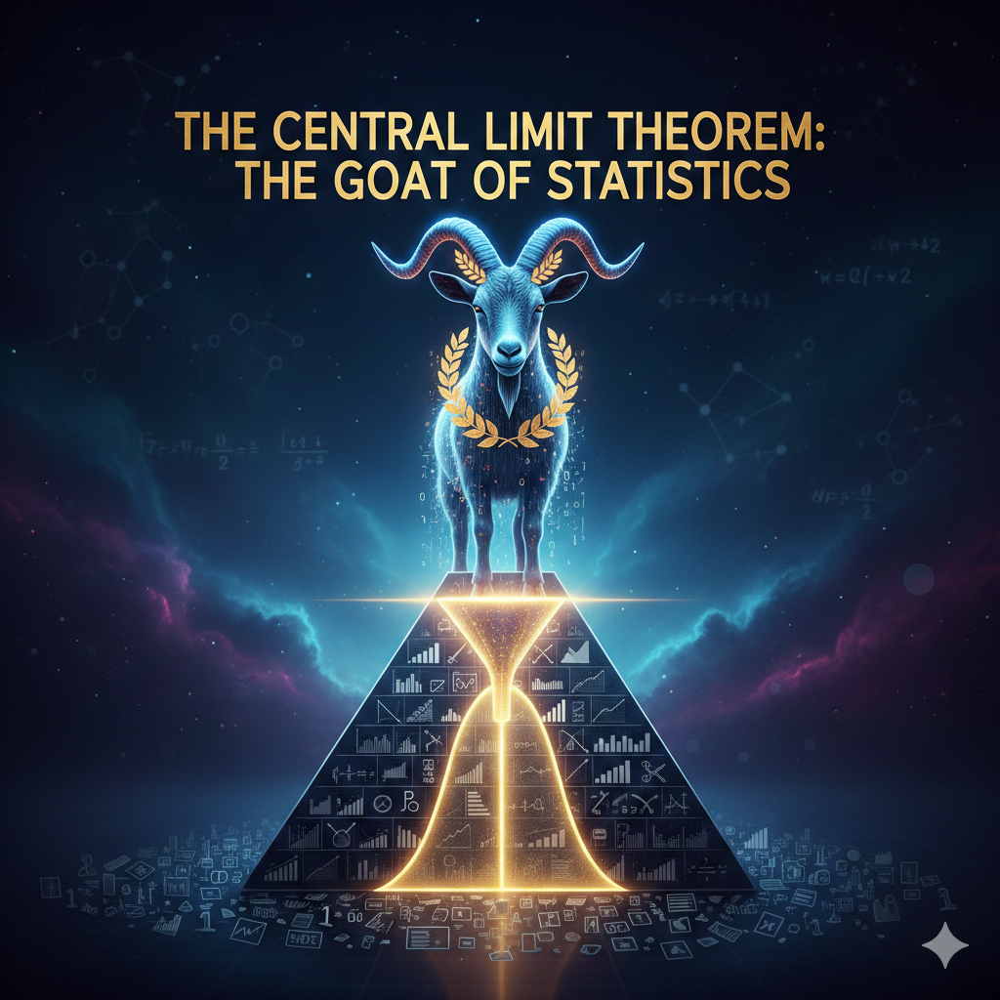
LeBron James is the Central Limit Theorem of basketball.
It shows up everywhere. It makes everything around it work better. And without it, modern statistics simply doesn’t exist.
The Central Limit Theorem
Real-world data is messy. If you don’t know anything about the distribution the data comes from, can we say something about the data’s mean?
- Convoy travel times
- Dice rolls
- Household incomes
- Time between equipment failures
- Wait times at sick call
None of these are normal. But in every case, we care about the average — and we usually don’t know the true population mean \(\mu\). We only have a sample.
So here’s the question: if you collect a sample of size \(n\) from some ugly, non-normal population and compute \(\bar{X}\)…
Can you say anything useful about how close \(\bar{X}\) is to the true \(\mu\)?
For Example: Dice Rolls
Everyone roll a die and call out your number.
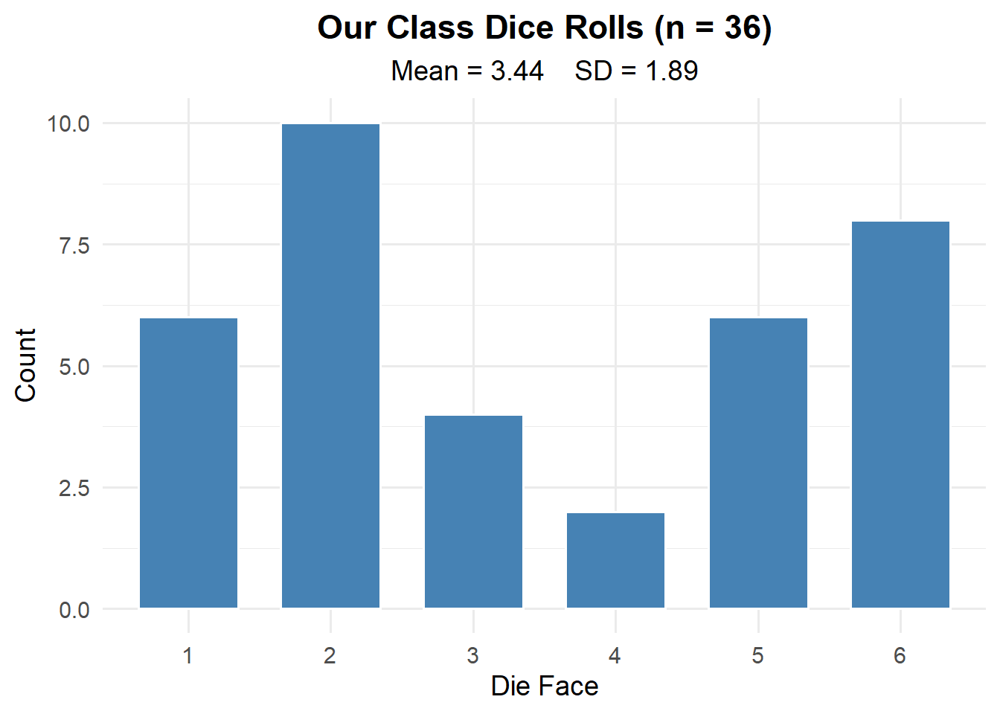
This is clearly not normal. It’s roughly uniform — no bell curve here.
But what if we could repeat this experiment thousands of times and look at the average each time?
Code
library(ggplot2)
rolls <- c(3, 5, 2, 6, 1, 4, 3, 2, 6, 5, 1, 4, 3, 2, 5, 6, 1, 4, 3, 5, 2, 6, 1, 4, 3, 2, 6, 5, 1, 4, 3, 2, 5, 6, 1, 4) # paste real rolls
n_cadets <- length(rolls)
# Change this number live: 10, 100, 1000, 10000
n_sims <- 10
xbar_sim <- replicate(n_sims, mean(sample(1:6, n_cadets, replace = TRUE)))
ggplot(data.frame(xbar = xbar_sim), aes(x = xbar)) +
geom_histogram(aes(y = after_stat(density)), bins = 25,
fill = "firebrick", color = "white", alpha = 0.7) +
stat_function(fun = dnorm,
args = list(mean = 3.5,
sd = sqrt(sum((1:6 - 3.5)^2)/6) / sqrt(n_cadets)),
linewidth = 1.2, linetype = "dashed") +
xlim(1, 6) +
labs(title = paste0(format(n_sims, big.mark = ","), " Sample Means (n = ", n_cadets, " each)"),
x = expression(bar(X)), y = "Density") +
theme_minimal(base_size = 14) +
theme(plot.title = element_text(hjust = 0.5, face = "bold"))But what do we notice about the shape as we repeat the experiment more and more?
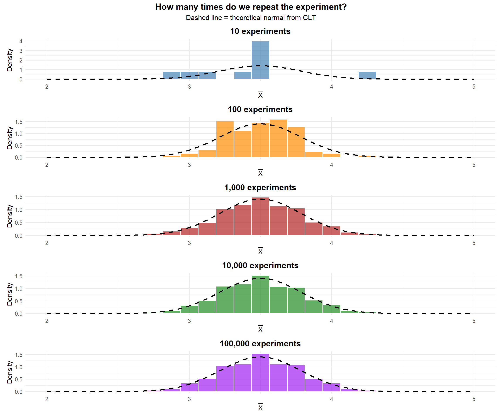
And what about the mean and standard deviation of \(\bar{X}\)?
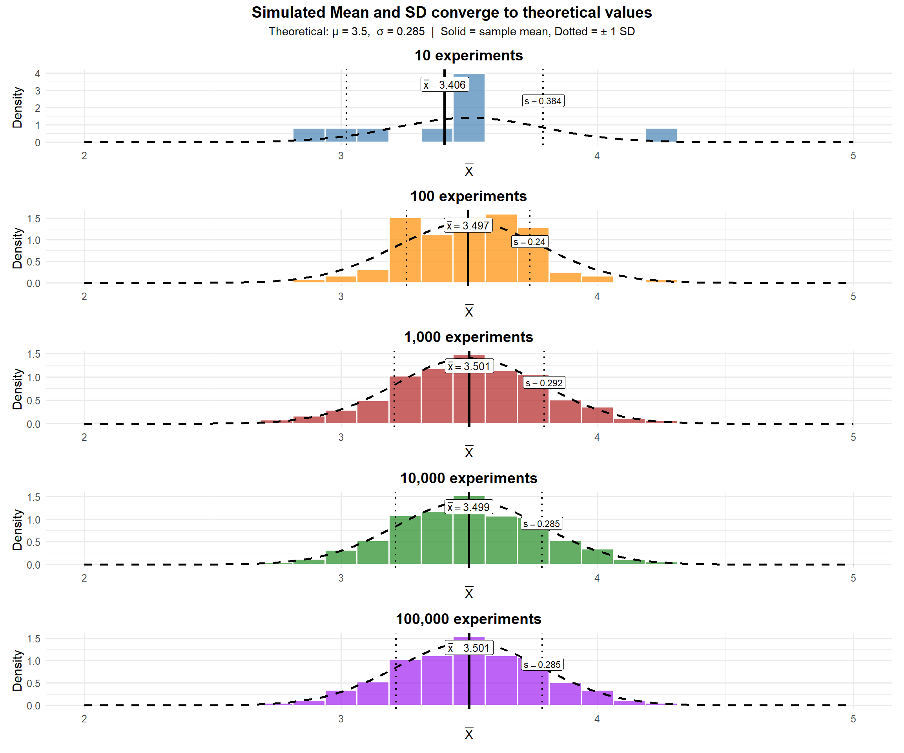
Each individual roll is uniform — but the average of 36 rolls follows a bell curve. That’s the Central Limit Theorem.
ImportantWhat We Noticed
From the plots above, the mean of \(\bar{X}\) converges to 3.5 — the mean of the underlying distribution (a fair die). And the standard deviation of \(\bar{X}\) converges to the standard deviation of the underlying distribution divided by \(\sqrt{n}\).
For any distribution with mean \(\mu\) and standard deviation \(\sigma\):
\[E(\bar{X}) = \mu \qquad SD(\bar{X}) = \frac{\sigma}{\sqrt{n}}\]
\[\bar{X} \sim N\left(\mu, \frac{\sigma^2}{n}\right)\]
Sampling Distribution Simulation
Let’s see what happens when we take many samples and look at the distribution of \(\bar{X}\).
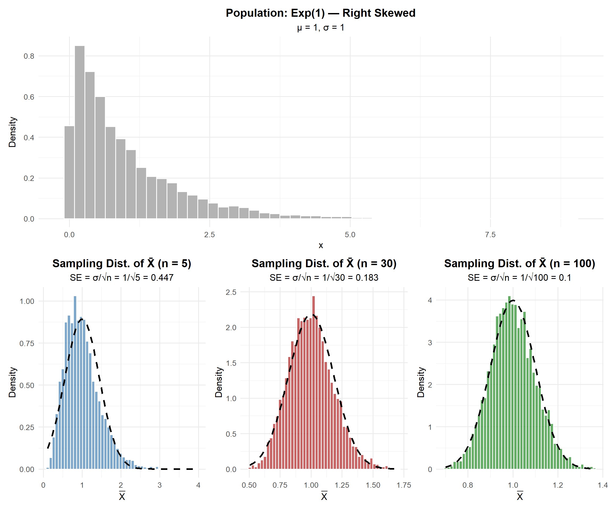
Key observations:
- The population is right-skewed (exponential), but the sampling distribution of \(\bar{X}\) becomes more normal as \(n\) increases
- At \(n = 5\): still somewhat skewed
- At \(n = 30\): approximately normal
- At \(n = 100\): very close to normal
- The spread decreases as \(n\) increases (standard error \(= \sigma/\sqrt{n}\))
The Central Limit Theorem
ImportantCentral Limit Theorem (CLT)
Let \(X_1, X_2, \ldots, X_n\) be a random sample from any distribution with mean \(\mu\) and finite standard deviation \(\sigma\). Then for sufficiently large \(n\):
\[\bar{X} \sim N\left(\mu, \frac{\sigma^2}{n}\right)\]
Or equivalently, the standardized sample mean:
\[Z = \frac{\bar{X} - \mu}{\sigma / \sqrt{n}} \sim N(0, 1)\]
This works regardless of the shape of the original population!
How Large is “Large Enough”?
NoteRules of Thumb for CLT
The CLT approximation is good when:
For \(\bar{X}\) (sample mean):
- If the population is normal: CLT works for any \(n\)
- Otherwise: \(n \geq 30\) is the common rule of thumb
The Takeaway for Today
NoteKey Concepts: Central Limit Theorem
The Central Limit Theorem (CLT): If \(X_1, X_2, \ldots, X_n\) are independent and identically distributed (iid) with mean \(\mu\) and standard deviation \(\sigma\), then for large \(n\):
\[\bar{X} \sim N\left(\mu, \frac{\sigma^2}{n}\right)\]
Standard Error of the Mean: \[\sigma_{\bar{X}} = \frac{\sigma}{\sqrt{n}}\]
When is \(n\) “large enough”?
- If the population is normal: CLT works for any \(n\)
- Otherwise: \(n \geq 30\) is the common rule of thumb
To compute probabilities:
- Identify \(\mu\) and \(\sigma\)
- Compute the standard error: \(SE = \sigma / \sqrt{n}\)
- Use
pnorm()with the appropriate mean and SD (the SE)
Board Problems
Problem 1: Ruck March Times
The time to complete a 12-mile ruck march at West Point has a mean of \(\mu = 180\) minutes and a standard deviation of \(\sigma = 25\) minutes (the distribution is right-skewed).
NoteQuestions
If a single cadet is randomly selected, can we determine \(P(X < 170)\) using the normal distribution? Why or why not?
A company of \(n = 49\) cadets is randomly selected. What is the standard error of \(\bar{X}\)?
What is the probability the company’s average ruck time is under 170 minutes?
What is the probability the company’s average ruck time is between 175 and 185 minutes?
TipAnswers
No — we cannot assume an individual observation is normally distributed since the population is right-skewed. We would need to know the actual distribution to compute this probability.
\(SE = \frac{\sigma}{\sqrt{n}} = \frac{25}{\sqrt{49}} = \frac{25}{7} = 3.571\) minutes
By the CLT (\(n = 49 \geq 30\)): \(\bar{X} \sim N(180, 3.571^2)\)
\[P(\bar{X} < 170) = P\left(Z < \frac{170 - 180}{3.571}\right) = P(Z < -2.80)\]
[1] 0.00255513About 0.26% — very unlikely the company average is that fast.
- \(P(175 < \bar{X} < 185) = P\left(\frac{175-180}{3.571} < Z < \frac{185-180}{3.571}\right) = P(-1.40 < Z < 1.40)\)
[1] 0.8384867About 83.8% chance the company average falls within 5 minutes of the mean.
Problem 2: ACFT Deadlift
The Army Combat Fitness Test (ACFT) 3-repetition maximum deadlift has a mean of \(\mu = 340\) lbs with \(\sigma = 40\) lbs for a certain population of soldiers.
NoteQuestions
For a random sample of \(n = 25\) soldiers, what are the mean and standard error of \(\bar{X}\)?
What is the probability the sample average deadlift exceeds 355 lbs?
How large a sample is needed so that the standard error is at most 5 lbs?
TipAnswers
\(E(\bar{X}) = \mu = 340\) lbs. \(\quad SE = \frac{40}{\sqrt{25}} = 8\) lbs.
\(P(\bar{X} > 355) = P\left(Z > \frac{355 - 340}{8}\right) = P(Z > 1.875)\)
[1] 0.03039636About 3.0% chance.
- We need \(\frac{\sigma}{\sqrt{n}} \leq 5\), so \(\frac{40}{\sqrt{n}} \leq 5\), so \(\sqrt{n} \geq 8\), so \(n \geq 64\).
We need a sample of at least 64 soldiers.
Problem 3: Patrol Response Times
A Quick Reaction Force (QRF) has response times with unknown distribution, but historical data shows \(\mu = 8\) minutes and \(\sigma = 3\) minutes.
NoteQuestions
Over the next \(n = 40\) callouts, what is the probability the average response time exceeds 9 minutes?
The commander considers the QRF “too slow” if the average response time exceeds 8.5 minutes over 40 callouts. What is the probability this happens?
If the commander wanted to detect a shift from \(\mu = 8\) to \(\mu = 9\) minutes, would \(n = 10\) callouts give a reliable estimate? Explain using the standard error.
TipAnswers
- By CLT: \(\bar{X} \sim N\left(8, \frac{3^2}{40}\right) = N(8, 0.225)\), so \(SE = \frac{3}{\sqrt{40}} = 0.4743\)
\[P(\bar{X} > 9) = P\left(Z > \frac{9 - 8}{0.4743}\right) = P(Z > 2.108)\]
[1] 0.01750749About 1.75% — very unlikely if the true mean is 8 minutes.
- \(P(\bar{X} > 8.5) = P\left(Z > \frac{8.5 - 8}{0.4743}\right) = P(Z > 1.054)\)
[1] 0.1459203About 14.6% chance.
- With \(n = 10\): \(SE = \frac{3}{\sqrt{10}} = 0.949\) minutes. This means a 1-minute shift (\(\mu = 8\) to \(\mu = 9\)) is only about 1 SE away — hard to distinguish from random variation. With \(n = 40\): \(SE = 0.474\), so the same shift is over 2 SEs — much easier to detect. Larger samples give more precision.
Before You Leave
Today
- The Central Limit Theorem says \(\bar{X} \sim N(\mu, \sigma^2/n)\) for large \(n\), regardless of population shape
- Standard error \(= \sigma/\sqrt{n}\) — measures precision of the sample mean
- Larger samples → smaller SE → more precise estimates
- The CLT is the foundation for confidence intervals and hypothesis tests (coming next!)
Any questions?
Next Lesson
Lesson 18: Confidence Intervals I
- Define confidence level and margin of error
- Construct one-sample CIs for means or proportions
- Justify \(z\) vs. \(t\) procedures and conditions
Upcoming Graded Events
- WebAssign 5.3, 5.4 - Due before Lesson 18
- WPR II - Lesson 27